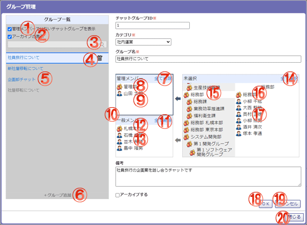

チャットグループの追加・編集・削除を行うことができます。

機能説明
管理メンバーではないチャットグループを表示チェックボックス管理メンバーではないチャットグループの表示/非表示を切り替えます。システム管理者、プラグイン管理者にのみ表示されます。 |
アーカイブの表示チェックボックスアーカイブ状態のチャットグループの表示/非表示を切り替えます。 |
|---|---|
検索アイコン入力された検索条件で検索を行います。 |
削除アイコン選択したチャットグループを削除します。 |
チャットグループ選択したチャットグループを編集します。編集中は他のグループチャットの追加、編集、削除はできません。 |
グループ追加ボタンチャットグループを追加します。追加中は他のグループチャットの追加、編集、削除はできません。 |
全て削除ボタン管理メンバーに選択されたグループ/ユーザを全て削除します。 |
選択済みグループグループ名をクリックすることで、グループを未選択状態にします。 |
選択済みユーザユーザ名をクリックすることで、ユーザを未選択状態にします。 |
管理メンバーエリア/一般メンバーエリア管理メンバーエリアと一般メンバーエリアのいずれかをクリックし、追加先として選択します。 |
全て削除ボタン一般メンバーに選択されたグループ/ユーザを全て削除します。 |
選択済みグループグループ名をクリックすることで、グループを未選択状態にします。 |
選択済みユーザユーザ名をクリックすることで、ユーザを未選択状態にします。 |
全て選択ボタン未選択エリアに表示されている全てのグループ/ユーザを選択したエリアに追加します。 |
グループグループ名をクリックすることで、グループおよびグループに所属するユーザが未選択エリアに表示されます。 |
未選択グループグループ名をクリックすることで、グループを選択したエリアに追加します。 |
未選択ユーザユーザ名をクリックすることで、ユーザを選択したエリアに追加します。 |
OKボタンチャットグループを追加/編集します。 |
キャンセルボタンチャットグループの追加/編集をキャンセルします。 |
閉じるボタングループ管理画面を閉じます。 |
表示・入力項目説明
検索キーワード入力欄
検索キーワードを入力します（100文字以内）。チャットグループ名に対して検索が行われます。
チャットグループID
チャットグループIDを入力します（20文字以内）。
カテゴリ
カテゴリを選択します。システム管理者又はプラグイン管理者のみ表示されます。
グループ名
グループ名を入力します（100文字以内）。
備考
備考を入力します（500文字以内）。
アーカイブする
チャットグループをアーカイブ状態にします。チェックボックスはチャットグループの編集時のみ表示されます。 アーカイブ状態のチャットグループはメッセージの送信ができなくなります。